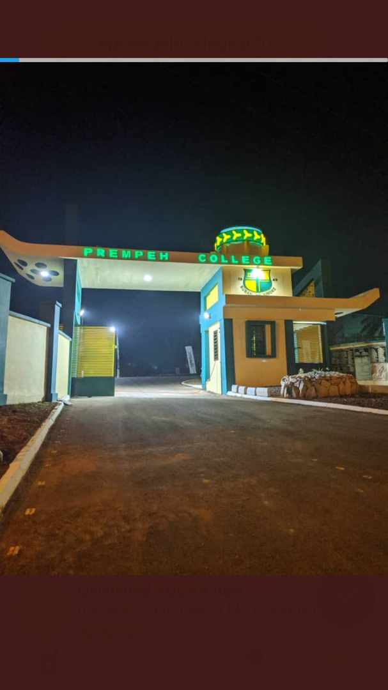

PREMPEH COLLEGE
KUMASI, GHANA


SENIOR PREFECT
2020-2021
ACHIEVEMENTS
*Filed and followed up on change orders generated from the prefectorial board.
*Collaborated with the compound committee to introduce sanitation reps.
*Initiated conversations with Administration on the need to grant the protocol committee office.
*Communicated with class representatives to determine project requirements and objectives.
*Identified, reviewed and selected vendors to sell at specific time in accordance with class hours and prep
time.
*Provided the Red Cross Society with a first aid box through conversations with Administration.
*Coordinated and designated work tasks among the members of the prefectorial board.
*Made the public address system available to student leaders.
ORGANIZER
RED CROSS SOCIETY
2020-2021
ACHIEVEMENTS
*Used professional approach to consolidate, sort and categorize items.
* Organized services to meet member needs, by arranging meetings for members to meet at least once every
month despite the COVID-19 pandemic.
*Arranged paperwork and schedules for members to support student's needs.
ADVISOR
PROTOCOL COMMITTEE
2020-2021
ACHIEVEMENTS
*Initiated the introduction of a constitution to curb the struggle for power.
*Provided individual and group counseling services to meet developmental and remedial needs of students.
*Started a conversation about preparing files for executives and honouring them with certificates after their
tenure of office.
*Facilitated strategic planning sessions to develop mission statements and long-term goals